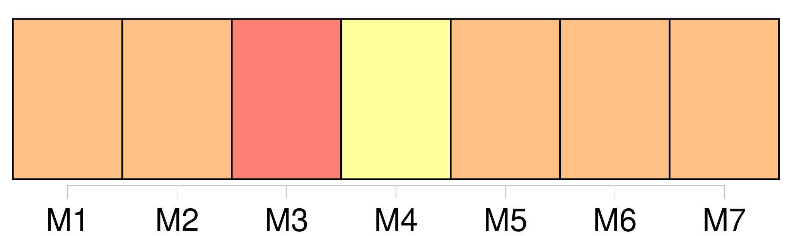

Longueur nb maillons : 403 mentions |
 |
Je levai par hasard ma tête, que j’ avais jusque -là tenue inclinée, et j’ aperçus devant moi, si près que j’ aurais pu [la] toucher, quoique en réalité [elle] fût à une assez grande distance et de l’ autre côté de la balustrade, [une jeune femme d’ une beauté rare] et vêtue avec une magnificence royale. [3 phrases]
[La charmante créature] se détachait sur ce fond d’ ombre comme une révélation angélique ; [elle] semblait éclairée d’ [elle -même] et donner le jour plutôt que le recevoir. [1 phrases]
Une minute après, je rouvris les yeux, car à travers mes cils je [la] voyais étincelante des couleurs du prisme, et dans une pénombre pourprée comme lorsqu’ on regarde le soleil. [1 phrases] comme [elle] était belle!! [20 phrases] Le regard de [la belle inconnue] changeait d’ expression selon le progrès de la cérémonie. [3 phrases] [Elle] parut sensible au martyre que j’ éprouvais, et, comme pour m’ encourager, [elle] me lança une œillade pleine de divines promesses.
[Ses] yeux étaient un poème dont chaque regard formait un chant.
Elle me disait : Déchire ce funèbre linceul où tu vas t’ envelopper ; [je] suis la beauté, [je] suis la jeunesse, [je] suis la vie ; viens à [moi] , nous serons l’ amour. [3 phrases] [Je] t’ emmènerai vers les îles inconnues ; tu dormiras sur [mon] sein, dans un lit d’ or massif et sous un pavillon d’ argent ; car [je] t’ aime et [je] veux te prendre à ton Dieu, devant qui tant de nobles cœurs répandent des flots d’ amour qui n’ arrivent pas jusqu’ à lui.
» [1 phrases]
[La belle] me jeta un second coup d’ œil si suppliant, si désespéré, que des lames acérées me traversèrent le cœur, que je me sentis plus de glaives dans la poitrine que la mère de douleurs. [2 phrases] Le sang abandonna complétement [sa] charmante figure, et [elle] devint d’ une blancheur de marbre ; [ses] beaux bras tombèrent le long de [son] corps, comme si les muscles en avaient été dénoués, et [elle] s’ appuya contre un pilier, car [ses] jambes fléchissaient et se dérobaient sous [elle] [4 phrases] [C’] était [elle] [3 phrases]
» me dit [-elle] à voix basse ; puis [elle] disparut dans la foule. [4 phrases] Je fis sauter le fermoir, il n’ y avait que deux feuilles avec ces mots : « [Clarimonde] , au palais Concini. » J’ étais alors si peu au courant des choses de la vie, que je ne connaissais pas [Clarimonde] , malgré [sa] célébrité, et que j’ ignorais complétement où était situé le palais Concini.
Je fis mille conjectures, plus extravagantes les unes que les autres ; mais à la vérité, pourvu que je pusse [la] revoir, j’ étais fort peu inquiet de ce qu’ [elle] pouvait être, grande dame ou courtisane. [1 phrases] [Cette femme] s’ était complétement emparée de moi, un seul regard avait suffi pour me changer ; [elle] m’ avait soufflé [sa] volonté ; je ne vivais plus dans moi, mais dans [elle] et par [elle] Je faisais mille extravagances, je baisais sur ma main la place qu’ [elle] avait touchée, et je répétais [son] nom des heures entières. Je n’ avais qu’ à fermer les yeux pour [la] voir aussi distinctement que si [elle] eût été présente en réalité, et je me redisais ces mots, qu’ [elle] m’ avait dits sous le portail de l’ église : « Malheureux!! [6 phrases] Comment faire pour revoir [Clarimonde] ?? [5 phrases] si je n’ eusse pas été prêtre, j’ aurais pu [la] voir tous les jours ; j’ aurais été [son] amant, [son] époux, me disais -je dans mon aveuglement ; au lieu d’ être enveloppé dans mon triste suaire, j’ aurais des habits de soie et de velours, des chaînes d’ or, une épée et des plumes comme les beaux jeunes cavaliers. [23 phrases] Partir demain sans [l’] avoir revue!! [1 phrases] perdre à tout jamais l’ espérance de [la] rencontrer à moins d’ un miracle!! [Lui] écrire?? [3 phrases] Puis, ce que l’ abbé Sérapion m’ avait dit des artifices du diable me revenait en mémoire ; l’ étrangeté de l’ aventure, la beauté surnaturelle de [Clarimonde] , l’ éclat phosphorique de [ses] yeux, l’ impression brûlante de [sa] main, le trouble où [elle] m’ avait jeté, le changement subit qui s’ était opéré en moi, ma piété évanouie en un instant, tout cela prouvait clairement la présence du diable, et cette main satinée n’ était peut-être que le gant dont il avait recouvert sa griffe. [2 phrases] Tout en parcourant les rues de la ville, je regardais à toutes les fenêtres et à tous les balcons si je ne verrais pas [Clarimonde] ; mais il était trop matin, et la ville n’ avait pas encore ouvert les yeux. [3 phrases] Quand je fus tout en haut, je me retournai pour regarder une fois encore les lieux où vivait [Clarimonde] [5 phrases] Il mit sa main au-dessus de ses yeux, et, ayant regardé, il me répondit : « C’ est l’ ancien palais que le prince Concini a donné à [la courtisane Clarimonde] ; il s’ y passe d’ épouvantables choses.
»
[C’] était [Clarimonde] ! [1 phrases] savait [-elle] qu’ à cette heure, du haut de cet âpre chemin qui m’ éloignait d’ [elle] , et que je ne devais plus redescendre, ardent et inquiet, je couvais de l’ œil le palais qu’ [elle] habitait, et qu’ un jeu dérisoire de lumière semblait rapprocher de moi, comme pour m’ inviter à y entrer en maître??
Sans doute, [elle] le savait, car [son] âme était trop sympathiquement liée à la mienne pour n’ en point ressentir les moindres ébranlements, et c’ était ce sentiment qui [l’] avait poussée, encore enveloppée de [ses] voiles de nuit, à monter sur le haut de la terrasse, dans la glaciale rosée du matin. [15 phrases] La pensée de [Clarimonde] recommença à m’ obséder, et, quelques efforts que je fisse pour la chasser, je n’ y parvenais pas toujours. [5 phrases] Je ne jouissais pas de ce bonheur que donne l’ accomplissement d’ une sainte mission ; mon idée était ailleurs, et les paroles de [Clarimonde] me revenaient souvent sur les lèvres comme une espèce de refrain involontaire. [8 phrases] L’ homme me dit que [sa maîtresse] , une très grande dame, était à l’ article de la mort et [désirait] un prêtre. [14 phrases] Un page nègre, le même qui m’ avait donné les tablettes de [Clarimonde] et que je reconnus à l’ instant, me vint aider à descendre, et un majordome, vêtu de velours noir avec une chaîne d’ or au col et une canne d’ ivoire à la main, s’ avança au-devant de moi. [4 phrases] » Il me prit par le bras et me conduisit à la salle funèbre ; je pleurais aussi fort que lui, car j’ avais compris que la morte n’ était autre que [cette Clarimonde] tant et si follement aimée. [2 phrases] Je m’ agenouillai sans oser jeter les yeux sur le lit, et je me mis à réciter les psaumes avec une grande ferveur, remerciant Dieu qu’ il eût mis la tombe entre l’ idée de [cette femme] et moi, pour que je pusse ajouter à mes prières [son] nom désormais sanctifié. [4 phrases] Je songeais au singulier hasard qui m’ avait fait retrouver [Clarimonde] au moment où je [la] perdais pour toujours, et un soupir de regret s’ échappa de ma poitrine. [3 phrases] Les rideaux de damas rouge à grandes fleurs, relevés par des torsades d’ or, laissaient voir la morte couchée tout de [son] long et les mains jointes sur la poitrine. [Elle] était couverte d’ un voile de lin d’ une blancheur éblouissante, que le pourpre sombre de la tenture faisait encore mieux ressortir, et d’ une telle finesse qu’ il ne dérobait en rien la forme charmante de [son] corps et permettait de suivre ces belles lignes onduleuses comme le cou d’ un cygne que la mort même n’ avait pu roidir. [1 phrases] Je ne pouvais plus y tenir ; cet air d’ alcôve m’ enivrait, cette fébrile senteur de rose à demi fanée me montait au cerveau, et je marchais à grands pas dans la chambre, m’ arrêtant à chaque tour devant l’ estrade pour considérer [la gracieuse trépassée] sous la transparence de [son] linceul. D’ étranges pensées me traversaient l’ esprit ; je me figurais qu’ [elle] n’ était point morte réellement, et que ce n’ était qu’ une feinte qu’ [elle] avait employée pour m’ attirer dans [son] château et me conter [son] amour.
Un instant même je crus avoir vu bouger [son] pied dans la blancheur des voiles, et se déranger les plis droits du suaire. Et puis je me disais : « Est [-ce] bien [Clarimonde] ?? [3 phrases] » Mais mon cœur me répondit avec un battement : « [C’] est bien [elle] , [c’] est bien [elle] » Je me rapprochai du lit et je regardai avec un redoublement d’ attention [l’ objet de mon incertitude] [3 phrases] Navré de douleur, éperdu de joie, frissonnant de crainte et de plaisir, je me penchai vers [elle] et je pris le coin du drap ; je le soulevai lentement en retenant mon souffle de peur de [l’] éveiller. [1 phrases] [C’] était en effet [la Clarimonde] telle que je [l’] avais vue à l’ église lors de mon ordination ; [elle] était aussi charmante, et la mort chez [elle] semblait une coquetterie de plus. La pâleur de [ses] joues, le rose moins vif de [ses] lèvres, [ses] longs cils baissés et découpant leur frange brune sur cette blancheur [lui] donnaient une expression de chasteté mélancolique et de souffrance pensive d’ une puissance de séduction inexprimable ; [ses] longs cheveux dénoués, où se trouvaient encore mêlées quelques petites fleurs bleues, faisaient un oreiller à [sa] tête et protégeaient de leurs boucles la nudité de [ses] épaules ; [ses] belles mains, plus pures, plus diaphanes que des hosties, étaient croisées dans une attitude de pieux repos et de tacite prière, qui corrigeait ce qu’ auraient pu avoir de trop séduisant, même dans la mort, l’ exquise rondeur et le poli d’ ivoire de [ses] bras nus dont on n’ avait pas ôté les bracelets de perles. Je restai longtemps absorbé dans une muette contemplation, et plus je [la] regardais, moins je pouvais croire que la vie avait pour toujours abandonné ce beau corps. Je ne sais si cela était une illusion ou un reflet de la lampe, mais on eût dit que le sang recommençait à circuler sous cette mate pâleur ; cependant [elle] était toujours de la plus parfaite immobilité. Je touchai légèrement [son] bras ; il était froid, mais pas plus froid pourtant que [sa] main le jour qu’ [elle] avait effleuré la mienne sous le portail de l’ église. Je repris ma position, penchant ma figure sur la sienne et laissant pleuvoir sur [ses] joues la tiède rosée de mes larmes. [3 phrases] j’ aurais voulu pouvoir ramasser ma vie en un monceau pour la [lui] donner et souffler sur [sa] dépouille glacée la flamme qui me dévorait. La nuit s’ avançait, et, sentant approcher le moment de la séparation éternelle, je ne pus me refuser cette triste et suprême douceur de déposer un baiser sur les lèvres mortes de [celle] [qui] avait eu tout mon amour. [1 phrases] un léger souffle se mêla à mon souffle, et la bouche de [Clarimonde] répondit à la pression de la mienne : [ses] yeux s’ ouvrirent et reprirent un peu d’ éclat, [elle] fit un soupir, et, décroisant [ses] bras, [elle] les passa derrière mon cou avec un air de ravissement ineffable. [1 phrases] c’ est toi, Romuald, dit [-elle] d’ une voix languissante et douce comme les dernières vibrations d’ une harpe ; que fais -tu donc?? [Je] t’ ai attendu si longtemps, que [je] suis morte ; mais maintenant nous sommes fiancés, [je] pourrai te voir et aller chez toi. [1 phrases] [je] t’ aime ; c’ est tout ce que [je] voulais te dire, et [je] te rends la vie que tu as rappelée sur [moi] une minute avec ton baiser ; à bientôt.
» Un tourbillon de vent furieux défonça la fenêtre et entra dans la chambre ; la dernière feuille de la rose blanche palpita quelque temps comme une aile au bout de la tige, puis elle se détacha et s’ envola par la croisée ouverte, emportant avec elle l’ âme de [Clarimonde]
La lampe s’ éteignit et je tombai évanoui sur le sein de [la belle morte] [9 phrases]
Cependant personne ne connaissait dans les environs un château auquel s’ appliquât la description du château où j’ avais retrouvé [Clarimonde] [10 phrases]
Puis, sans préparation aucune, et comme une nouvelle dont il se souvenait à l’ instant et qu’ il eût craint d’ oublier ensuite, il me dit d’ une voix claire et vibrante qui résonna à mon oreille comme les trompettes du jugement dernier : [4 phrases] Il a couru de tout temps sur [cette Clarimonde] de bien étranges histoires, et tous ses amants ont fini d’ une manière misérable ou violente. On a dit que [c’] était une goule, un vampire femelle ; mais je crois que [c’] était Béelzébuth en personne. [1 phrases] Je n’ avais pu me défendre d’ un mouvement en entendant nommer [Clarimonde] , et cette nouvelle de sa mort, outre la douleur qu’ elle me causait par son étrange coïncidence avec la scène nocturne dont j’ avais été témoin, me jeta dans un trouble et un effroi qui parurent sur ma figure, quoi que je fisse pour m’ en rendre maître. [2 phrases] La pierre de [Clarimonde] devrait être scellée d’ un triple sceau ; car ce n’ est pas, à ce qu’ on dit, la première fois qu’ [elle] est morte. [3 phrases] Le souvenir de [Clarimonde] et les paroles du vieil abbé étaient toujours présents à mon esprit ; cependant aucun événement extraordinaire n’ était venu confirmer les prévisions funèbres de Sérapion, et je commençais à croire que ses craintes et mes terreurs étaient trop exagérées ; mais une nuit je fis un rêve. [1 phrases] Je reconnus sur-le-champ [Clarimonde] [Elle] portait à la main une petite lampe de la forme de celles qu’ on met dans les tombeaux, dont la lueur donnait à [ses] doigts effilés une transparence rose qui se prolongeait par une dégradation insensible jusque dans la blancheur opaque et laiteuse de [son] bras nu. [Elle] avait pour tout vêtement le suaire de lin qui [la] recouvrait sur [son] lit de parade, dont [elle] retenait les plis sur [sa] poitrine, comme honteuse d’ être si peu vêtue, mais [sa] petite main n’ y suffisait pas ; [elle] était si blanche, que la couleur de la draperie se confondait avec celle des chairs sous le pâle rayon de la lampe. Enveloppée de ce fin tissu qui trahissait tous les contours de [son] corps, [elle] ressemblait à une statue de marbre de baigneuse antique plutôt qu’ à une femme douée de vie. Morte ou vivante, statue ou femme, ombre ou corps, sa beauté était toujours la même ; seulement l’ éclat vert de [ses] prunelles était un peu amorti, et [sa] bouche, si vermeille autrefois, n’ était plus teintée que d’ un rose faible et tendre presque semblable à celui de [ses] joues.
Les petites fleurs bleues que j’ avais remarquées dans [ses] cheveux étaient tout à fait sèches et avaient presque perdu toutes leurs feuilles ; ce qui ne [l’] empêchait pas d’ être charmante, si charmante que, malgré la singularité de l’ aventure et la façon inexplicable dont [elle] était entrée dans la chambre, je n’ eus pas un instant de frayeur.
[Elle] posa la lampe sur la table et s’ [assit] sur le pied de mon lit, puis [elle] me dit en se penchant vers moi avec cette voix argentine et veloutée à la fois que je n’ ai connue qu’ à [elle] : Mais [je] viens de bien loin, et d’ un endroit d’ où personne n’ est encore revenu ; il n’ y a ni lune ni soleil au pays d’ où [j’] arrive ; ce n’ est que de l’ espace et de l’ ombre ; ni chemin, ni sentier ; point de terre pour le pied, point d’ air pour l’ aile ; et pourtant [me] voici, car l’ amour est plus fort que la mort, et il finira par la vaincre. [1 phrases] que de faces mornes et de choses terribles [j’] ai vues dans [mon] voyage!! Que de peine [mon] âme, rentrée dans ce monde par la puissance de la volonté, a eue pour retrouver son corps et s’ y réinstaller!! Que d’ efforts il [m’] a fallu faire avant de lever la dalle dont on [m’] avait couverte!! [1 phrases] le dedans de [mes] pauvres mains en est tout meurtri. [1 phrases]
» [Elle] m’ appliqua l’ une après l’ autre les paumes froides de [ses] mains sur la bouche ; je les baisai en effet plusieurs fois, et [elle] me regardait faire avec un sourire d’ ineffable complaisance. [2 phrases] Je n’ avais pas même essayé de repousser le tentateur ; la fraîcheur de la peau de [Clarimonde] pénétrait la mienne, et je me sentais courir sur le corps de voluptueux frissons. [La pauvre enfant] !! malgré tout ce que j’ en ai vu, j’ ai peine à croire encore que [ce] fût un démon ; du moins [elle] n’ en avait pas l’ air, et jamais Satan n’ a mieux caché ses griffes et ses cornes. [Elle] avait reployé [ses] talons sous [elle] et se [tenait] accroupie sur le bord de la couchette dans une position pleine de coquetterie nonchalante. De temps en temps [elle] passait [sa] petite main à travers mes cheveux et les [roulait] en boucles comme pour essayer à mon visage de nouvelles coiffures. Je me laissais faire avec la plus coupable complaisance, et [elle] accompagnait tout cela du plus charmant babil. [1 phrases] « [Je] t’ aimais bien longtemps avant de t’ avoir vu, [mon] cher Romuald, et [je] te cherchais partout. Tu étais [mon] rêve, et [je] t’ ai aperçu dans l’ église au fatal moment ; [j’] ai dit tout de suite : « C’ est lui!! » [Je] te jetai un regard où [je] mis tout l’ amour que [j’] avais eu, que [j’] avais et que [je] devais avoir pour toi ; un regard à damner un cardinal, à faire agenouiller un roi à [mes] pieds devant toute sa cour.
Tu restas impassible et tu [me] préféras ton Dieu. [1 phrases]
que je suis jalouse de Dieu, que tu as aimé et que tu aimes encore plus que [moi] ! « Malheureuse, malheureuse que [je] suis!! [je] n’ aurai jamais ton cœur à [moi toute seule] , [moi] que tu as ressuscitée d’ un baiser, [Clarimonde la morte] , [qui] force à cause de toi les portes du tombeau et [qui] vient te consacrer une vie qu’ [elle] n’ a reprise que pour te rendre heureux!!
» [Ses] prunelles se ravivèrent et brillèrent comme des chrysoprases. [3 phrases] dit [-elle] en m’ enlaçant dans [ses] beaux bras. Puisque c’ est ainsi, tu viendras avec [moi] , tu [me] suivras où [je] voudrai. [1 phrases] Tu seras le plus fier et le plus envié des cavaliers, tu seras [mon] amant. — Être l’ amant avoué de [Clarimonde] , qui a refusé un pape, c’ est beau, cela!! [2 phrases]
— Quand partons -nous, [mon] gentilhomme? [4 phrases] reprit [-elle] [J’] aurai le temps de changer de toilette, car celle -ci est un peu succincte et ne vaut rien pour le voyage. Il faut aussi que [j’] aille avertir [mes] gens qui [me] croient sérieusement morte et qui se désolent tant qu’ ils peuvent. L’ argent, les habits, les voitures, tout sera prêt ; [je] te viendrai prendre à cette heure -ci. [1 phrases] » Et [elle] effleura mon front du bout de [ses] lèvres. [4 phrases] Les rideaux s’ écartèrent, et je vis [Clarimonde] , non pas, comme la première fois, pâle dans [son] pâle suaire et les violettes de la mort sur les joues, mais gaie, leste et pimpante, avec un superbe habit de voyage en velours vert orné de ganses d’ or et retroussé sur le côté pour laisser voir une jupe de satin. [Ses] cheveux blonds s’ échappaient en grosses boucles de dessous un large chapeau de feutre noir chargé de plumes blanches capricieusement contournées ; [elle] tenait à la main une petite cravache terminée par un sifflet d’ or. [Elle] m’ en toucha légèrement et me [dit] : « Eh bien!! [1 phrases] [Je] comptais vous trouver debout. [2 phrases] « Allons, habillez -vous et partons, dit [-elle] en me montrant du doigt un petit paquet qu’ [elle] avait apporté ; les chevaux s’ ennuient et rongent leur frein à la porte. [1 phrases]
» [Elle] donna du tour à mes cheveux, et, quand ce fut fait, [elle] me tendit un petit miroir de poche en cristal de Venise, bordé d’ un filigrane d’ argent, et me [dit] : « Comment te trouves -tu?? Veux -tu [me] prendre à ton service comme valet de chambre?? [7 phrases] [Clarimonde] me regardait d’ un air de complaisance maternelle et [paraissait] très contente de [son] œuvre. [2 phrases] » [Elle] me prit la main et m’ entraîna.
Toutes les portes s’ ouvraient devant [elle] aussitôt qu’ [elle] les touchait, et nous passâmes devant le chien sans l’ éveiller. À la porte, nous trouvâmes Margheritone : c’ était l’ écuyer qui m’ avait déjà conduit ; il tenait en bride trois chevaux noirs comme les premiers, un pour moi, un pour lui, un pour [Clarimonde] [2 phrases] J’ avais un bras passé derrière la taille de [Clarimonde] et une de [ses] mains ployée dans la mienne ; [elle] appuyait [sa] tête à mon épaule, et je sentais [sa] gorge demi-nue frôler mon bras. [10 phrases]
C’ était une anomalie dont je ne me rendais pas compte, soit que je crusse être le curé du petit village de XXX, ou il signor Romualdo, amant en titre de la [Clarimonde] [3 phrases] [Clarimonde] entendait la vie d’ une grande manière, et [elle] avait un peu de Cléopâtre dans [sa] nature. [3 phrases] Cependant, malgré la dissipation de cette vie, je restai fidèle à la [Clarimonde] Je [l’] aimais éperdument. [Elle] eût réveillé la satiété même et fixé l’ inconstance. Avoir [Clarimonde] , c’ était avoir vingt maîtresses, c’ était avoir toutes les femmes, tant [elle] était mobile, changeante et dissemblable d’ [elle -même] ; un vrai caméléon!! [Elle] vous faisait commettre avec [elle] l’ infidélité que vous eussiez commise avec d’ autres, en prenant complétement le caractère, l’ allure et le genre de beauté de la femme qui paraissait vous plaire. [Elle] me rendait mon amour au centuple, et c’ est en vain que les jeunes patriciens et même les vieux du conseil des Dix [lui] firent les plus magnifiques propositions. Un Foscari alla même jusqu’ à [lui] proposer de l’ épouser ; [elle] refusa tout. [Elle] avait assez d’ or ; [elle] ne voulait plus que de l’ amour, un amour jeune, pur, éveillé par [elle] , et qui devait être le premier et le dernier. [1 phrases] Rassuré par l’ habitude d’ être avec [elle] , je ne songeais presque plus à la façon étrange dont j’ avais fait connaissance avec [Clarimonde]
Cependant, ce qu’ [en] avait dit l’ abbé Sérapion me revenait quelquefois en mémoire et ne laissait pas que de me donner de l’ inquiétude. Depuis quelque temps la santé de [Clarimonde] n’ était plus aussi bonne ; [son] teint s’ amortissait de jour en jour. Les médecins qu’ on fit venir n’ entendaient rien à [sa] maladie, et ils ne savaient qu’ y faire. [1 phrases] Cependant [elle] pâlissait à vue d’ œil et [devenait] de plus en plus froide. [Elle] était presque aussi blanche et aussi morte que la fameuse nuit dans le château inconnu. Je me désolais de [la] voir ainsi lentement dépérir.
[Elle] , touchée de ma douleur, me souriait doucement et tristement avec le sourire fatal des gens qui savent qu’ ils vont mourir. Un matin, j’ étais assis auprès de [son] lit, et je déjeunais sur une petite table pour ne [la] pas quitter d’ une minute. [1 phrases] Le sang partit aussitôt en filets pourpres, et quelques gouttes rejaillirent sur [Clarimonde] [Ses] yeux s’ éclairèrent, [sa] physionomie prit une expression de joie féroce et sauvage que je ne [lui] avais jamais vue. [Elle] sauta à bas du lit avec une agilité animale, une agilité de singe ou de chat, et se [précipita] sur ma blessure qu’ [elle] se mit à sucer avec un air d’ indicible volupté. [Elle] avalait le sang par petites gorgées, lentement et précieusement, comme un gourmet qui savoure un vin de Xérès ou de Syracuse ; [elle] clignait les yeux à demi, et la pupille de [ses] prunelles vertes était devenue oblongue au lieu de ronde. De temps à autre [elle] s’ interrompait pour me baiser la main, puis [elle] recommençait à presser de [ses] lèvres les lèvres de la plaie pour en faire sortir encore quelques gouttes rouges.
Quand [elle] vit que le sang ne venait plus, [elle] se releva l’ œil humide et brillant, plus rose qu’ une aurore de mai, la figure pleine, la main tiède et moite, enfin plus belle que jamais et dans un état parfait de santé. « [Je] ne mourrai pas!! [je] ne mourrai pas!! dit [-elle] à moitié folle de joie et en se pendant à mon cou ; [je] pourrai t’ aimer encore longtemps. [Ma] vie est dans la tienne, et tout ce qui est [moi] vient de toi. Quelques gouttes de ton riche et noble sang, plus précieux et plus efficace que tous les élixirs du monde, [m’] ont rendu l’ existence.
» [3 phrases] Cependant, un soir, je vis dans ma glace, dont [elle] n’ avait pas calculé la perfide position, [Clarimonde] [qui] versait une poudre dans la coupe de vin épicé qu’ [elle] avait coutume de préparer après le repas. Je pris la coupe, je feignis d’ y porter mes lèvres, et je la posai sur quelque meuble comme pour l’ achever plus tard à mon loisir, et, profitant d’ un instant où [la belle] avait le dos tourné, j’ en jetai le contenu sous la table ; après quoi je me retirai dans ma chambre et je me couchai, bien déterminé à ne pas dormir et à voir ce que tout cela deviendrait. Je n’ attendis pas longtemps ; [Clarimonde] entra en robe de nuit et, s’ étant débarrassée de [ses] voiles, s’ [allongea] dans le lit auprès de moi.
Quand [elle] se fut bien assurée que je dormais, [elle] découvrit mon bras et [tira] une épingle d’ or de [sa] tête ; puis [elle] se mit à murmurer à voix basse : … Puisque tu [m’] aimes encore, il ne faut pas que [je] meure …… [2 phrases] son beau sang d’ une couleur pourpre si éclatante, [je] vais le boire. Dors, [mon] seul bien ; dors, [mon] dieu, [mon] enfant ; [je] ne te ferai pas de mal ; [je] ne prendrai de ta vie que ce qu’ il faudra pour ne pas laisser éteindre la mienne. Si [je] ne t’ aimais pas tant, [je] pourrais [me] résoudre à avoir d’ autres amants dont [je] tarirais les veines ; mais depuis que [je] te connais, [j’] ai tout le monde en horreur …… [4 phrases] [Je] n’ oserai jamais piquer cette jolie veine bleue. » Et, tout en disant cela, [elle] pleurait, et je sentais pleuvoir [ses] larmes sur mon bras qu’ [elle] tenait entre [ses] mains. Enfin [elle] se décida, me [fit] une petite piqûre avec [son] aiguille et se [mit] à pomper le sang qui en coulait.
Quoiqu’ [elle] en eût bu à peine quelques gouttes, la crainte de m’ épuiser [la] prenant, [elle] m’ entoura avec soin le bras d’ une petite bandelette après avoir frotté la plaie d’ un onguent qui la cicatrisa sur-le-champ. [1 phrases] — Cependant, malgré cette certitude, je ne pouvais m’ empêcher d’ aimer [Clarimonde] , et je [lui] aurais volontiers donné tout le sang dont [elle] avait besoin pour soutenir [son] existence factice. D’ ailleurs, je n’ avais pas grand’peur ; [la femme] me répondait du vampire, et ce que j’ avais entendu et vu me rassurait complétement ; j’ avais alors des veines plantureuses qui ne se seraient pas de sitôt épuisées, et je ne marchandais pas ma vie goutte à goutte. Je me serais ouvert le bras moi -même et je [lui] aurais dit : « Bois!! et que mon amour s’ infiltre dans [ton] corps avec mon sang!! » J’ évitais de faire la moindre allusion au narcotique qu’ [elle] m’ avait versé et à la scène de l’ aiguille, et nous vivions dans le plus parfait accord. [5 phrases] Je sais où [Clarimonde] a été enterrée ; il faut que nous [la] déterrions et que vous voyiez dans quel état pitoyable est l’ objet de votre amour ; vous ne serez plus tenté de perdre votre âme pour un cadavre immonde dévoré des vers et près de tomber en poudre ; cela vous fera assurément rentrer en vous -même. [2 phrases]
Après avoir porté la lumière de la lanterne sourde sur les inscriptions de plusieurs tombeaux, nous arrivâmes enfin à une pierre à moitié cachée par les grandes herbes et dévorée de mousses et de plantes parasites, où nous déchiffrâmes ce commencement d’ inscription : [14 phrases] Enfin la pioche de Sérapion heurta le cercueil dont les planches retentirent avec un bruit sourd et sonore, avec ce terrible bruit que rend le néant quand on y touche ; il en renversa le couvercle, et j’ aperçus [Clarimonde] pâle comme un marbre, les mains jointes ; [son] blanc suaire ne faisait qu’ un seul pli de [sa] tête à [ses] pieds. Une petite goutte rouge brillait comme une rose au coin de [sa] bouche décolorée. [1 phrases] [te] voilà, démon, courtisane impudique, buveuse de sang et d’ or!! [1 phrases] [La pauvre Clarimonde] n’ eut pas été plutôt touchée par la sainte rosée que [son] beau corps tomba en poussière ; ce ne fut plus qu’ un mélange affreusement informe de cendres et d’ os à demi calcinés. « Voilà [votre maîtresse] , seigneur Romuald, dit l’ inexorable prêtre en me montrant ces tristes dépouilles ; serez -vous encore tenté d’ aller vous promener au Lido et à Fusine avec [votre beauté] ?? [1 phrases] Je retournai à mon presbytère, et le seigneur Romuald, amant de [Clarimonde] , se sépara du pauvre prêtre, à qui il avait tenu pendant si longtemps une si étrange compagnie. Seulement, la nuit suivante, je vis [Clarimonde] ; [elle] me dit, comme la première fois sous le portail de l’ église : « Malheureux!! [4 phrases] et que t’ avais [-je] fait, pour violer [ma] pauvre tombe et mettre à nu les misères de [mon] néant?? [1 phrases] Adieu, tu [me] regretteras.
» [Elle] se dissipa dans l’ air comme une fumée, et je ne [la] revis plus. [1 phrases] [elle] a dit vrai : je [l’] ai regrettée plus d’ une fois et je [la] regrette encore. |

|
Il est possible de télécharger la ressource sur la page Ortolang |
Si vous avez des questions ou vous voyez des erreurs, merci d'envoyer un mail à silvia.federzoni89@gmail.com |